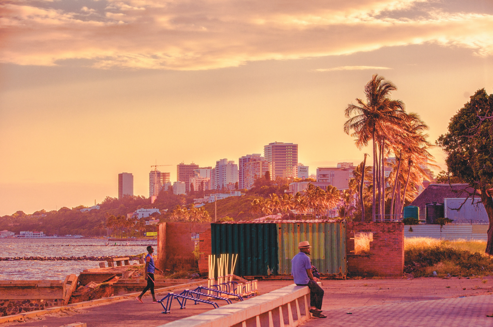

Moçambique

Moçambique é um país de grande diversidade cultural, e como a maioria dos países da África, não possui uma identidade específica, apresentando aspectos que o ligam a outros países vizinhos e mesmo a outros continentes. Ao conquistar a independência, em 1975, após quase quinze anos de guerra contra os portugueses, os líderes moçambicanos buscaram eliminar a língua do colonizador, mas isso se tornou impraticável ante à variedade de línguas presentes no país, que possuem importância regional, mas não alcance nacional.
São ao todo 43 idiomas, dos quais se destacam o macua, tsonga (shangaan), sena, lomwe, chuwabu e o nianja. O tsonga, por exemplo, é falado pela etnia de mesmo nome, que está espalhada por Moçambique, África do Sul, Zimbábue e Suazilândia. Já a língua nianja, por sua vez, é falada pela etnia chewa e mais alguns povos próximos a eles, em Zâmbia, Zimbábue, Moçambique e Malawi, sendo que neste último país ela é oficial.la.
São ao todo 43 idiomas, dos quais se destacam o macua, tsonga (shangaan), sena, lomwe, chuwabu e o nianja. O tsonga, por exemplo, é falado pela etnia de mesmo nome, que está espalhada por Moçambique, África do Sul, Zimbábue e Suazilândia. Já a língua nianja, por sua vez, é falada pela etnia chewa e mais alguns povos próximos a eles, em Zâmbia, Zimbábue, Moçambique e Malawi, sendo que neste último país ela é oficial.
Brasil

A cultura brasileira é representada pelo conjunto de tradições, manifestações culturais, costumes, culinária e religião dos povos que viveram no país ao longo da história.
Devido a um grande processo de miscigenação de etnias, o Brasil é um dos países com maior diversidade cultural do mundo. De maneira simplificada, pode-se dizer que a formação cultural do Brasil é o resultado da miscigenação entre o indígena, o negro e o imigrante europeu. Mas também vieram para o Brasil, povos de outras nacionalidades, trazendo consigo suas tradições e costumes, contribuindo para essa enorme pluralidade.
Devido à diversidade, a cultura brasileira não pode ser entendida de maneira homogênea, ela é o resultado de diferentes elementos culturais, que se expressam nas distintas regiões do território brasileiro. A diversidade brasileira, no entanto, sempre foi acompanhada de relações desiguais e hierarquizadas, com fortes injustiças sociais e séculos de violência, especialmente contra negros e indígenas
Portugal

Portugal é um país europeu com 10,3 milhões de habitantes, com uma população bastante idosa. A grande maioria da população, cerca de 77%, são católicos. Desse modo, a nação portuguesa possui muitas igrejas espalhadas por todo território. Além disso, é um importante destino religioso mundial devido a cidade de Fátima, a Capela das Aparições e do Santuário de Nossa Senhora de Fátima.
É muito comum ver idosos nas igrejas em diferentes horários do dia e muitas festas populares são relacionadas aos santos padroeiros. É o caso de Santo António de Lisboa, que nasceu em Lisboa e que possui uma igreja dedicada a ele e é possível visitar onde era o seu quarto. A igreja fica na freguesia (bairro) de Santa Maria Maior (Sé).
Devido à diversidade, a cultura brasileira não pode ser entendida de maneira homogênea, ela é o resultado de diferentes elementos culturais, que se expressam nas distintas regiões do território brasileiro. A diversidade brasileira, no entanto, sempre foi acompanhada de relações desiguais e hierarquizadas, com fortes injustiças sociais e séculos de violência, especialmente contra negros e indígenas
China
A China está entre as quatro civilizações mais antigas do mundo, juntamente com Egito, Índia e Babilônia. No país de dimensões continentais, somente a escrita já tem mais de 3,6 mil anos. A riqueza de informações milenar chinesa passeia pela arte, caligrafia, culinária, dança, música, literatura, artes marciais, medicina, religião, astrologia, arquitetura e comportamento.
O chinês é uma família de línguas de imensa diversidade e complexidade. Os dialetos chineses resultam da língua sino-tibetana, mas são inteiramente diferentes entre si. A língua oficial da China é o mandarim. A língua chinesa é tonal, por isso as palavras são diferenciadas pelo som e pela entonação, que pode subir ou descer.
A caligrafia está entre as artes tradicionais chinesas e começou na dinastia Shang, há 3,6 mil anos. É uma tradição milenar, que influenciou diretamente os países vizinhos. É dividida em cinco categorias, selo, oficial, formal, corrida e cursiva. Cada um dos estilos reflete um momento histórico e político chinês.